Mulberry Crunch Candy Bars
Mulberry Crunch Candy Bars
If you’re like most people, you probably started off the year with a whole list of resolutions. More sleep! Less caffeine! More exercise! Less television! More vegetables! Less sugar! As commendable as that is… one cannot live on celery, broccoli, and treadmill-pounding alone. Can they? Besides, it’s been a whole three weeks now! You deserve a reward! Allow me to tempt you with these delicious raw, vegan, Mulberry Crunch Candy Bars.
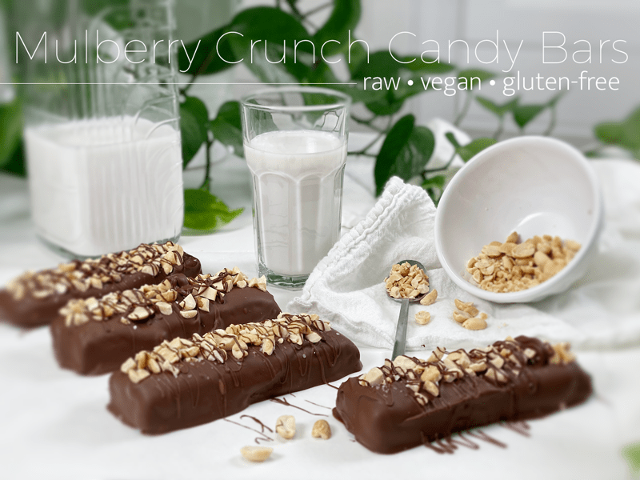
These candy bars have a soft, chewy, slightly crunchy interior, with the perfect amount of chocolate wrapping them up in one sweet little package! The dried white mulberries add a pronounced sweet and tart flavor that can stand up against the caramel-like Medjool dates and crunchy peanuts. No flavor gets lost; they all complement one another, allowing their flavors to individually share the spotlight.
Dried White Mulberries
- Measure out 1 3/4 cups of dried mulberries and place them in the freezer overnight (if possible).
- Mulberries have a mildly sweet flavor that is similar in taste to dried goji berries and figs.
- They provide unusually high levels of protein and iron for being a fruit and are also a rich source of vitamin C, fiber, calcium, and antioxidants. In fact, with 190% of the daily recommended value for vitamin C per serving, dried mulberries contain even more of this immunity-boosting vitamin per ounce than oranges!
- Mulberries may be stored at room temperature or in the refrigerator for up to 1 year. They should be kept in a sealed bag or container, away from heat and direct sunlight.
Shelled Peanuts
- If you have peanut allergies, you can easily use any other nut. Each nut will brings its own unique flavor to the table.
- If you are allergic to nuts, I highly recommend using sacha inchi seeds. They are one of the richest plant-based sources of Omega-3. Ounce for ounce, inchi seeds boast 17 times more Omega-3 than wild sockeye salmon. To me, they taste a bit like peanuts. You can learn more about them (here).
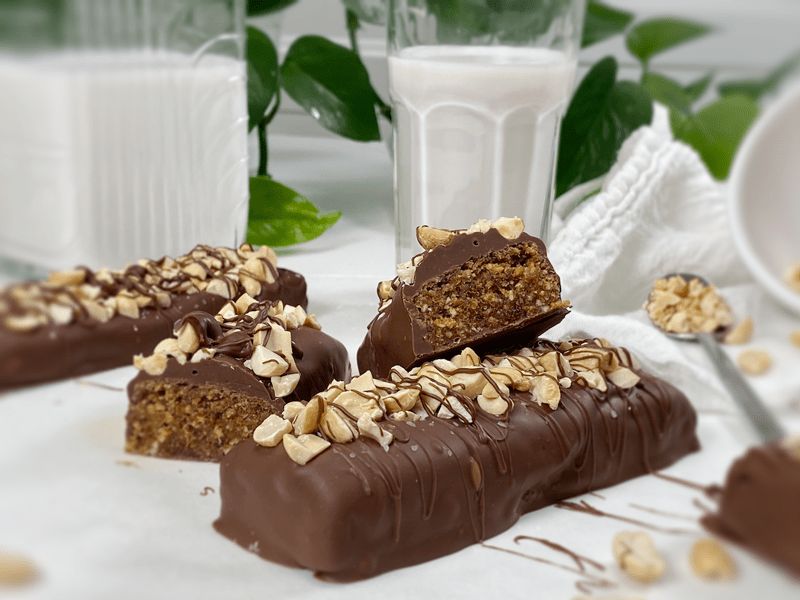
Maca Powder
- Maca powder has a distinct caramel or malt-like flavor, which pairs well with the mulberries and dates.
- Maca includes more than 20 amino acids, which your body uses to help grow and repair muscles — making it beneficial for people who work out regularly. It also contains vitamin C, B6, copper, iron, potassium, fiber, and manganese.
- The recipe calls for only one tablespoon, so if you don’t have any on hand, just omit it and don’t worry about replacing it with anything. I add it for the nutrients and the slight flavor profile that it offers.
Medjool Dates
- Rich with a caramel flavor, Medjool dates are almost the key ingredient in this candy bar. It acts as a binder, thickener, and as a whole food sweetener.
- You can add either 10 whole Medjool dates (pitted) or if you already have date paste on hand you can use 1/2 a cup of that instead. I have done it both ways, and they both turn out wonderfully.
- If you are eager to learn more about how they grow and how they are harvested, click (here). It’s always fascinating to learn where our food comes from.
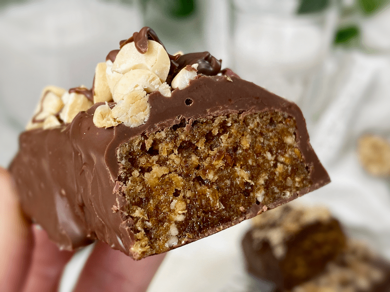
Chocolate Coating
There are a few ways you can go about creating a chocolate coating for your candy bars. You can make a raw version, or you can melt store-bought vegan chocolate chips. For some raw milk chocolate recipe ideas, click (here) and (here). If you like darker chocolate, try this (one). Whichever route you go, make sure that the chocolate is thick enough to adhere to the candy bar, giving it a substantial coating. If your chocolate is on the thin side, you can always double dip the candy bar after the first coating has firmed up.
Tips and Techniques
- As I mentioned before, be sure to freeze the mulberries for at least several hours or overnight. This will help with the blending process.
- You can shape the candy bars to whatever your heart desires. Big or small, you will love them all. If you want perfectly squared-up candy bars, follow the instructions below. If you don’t have the time or energy to fuss with them, you can shape them by hand for a more rustic-I-don’t-care-what-anybody-thinks appearance.
- If you are using WHOLE Medjool dates and they are dry and hard, soak them in enough warm water to soften them. Once they are done soaking, drain and hand squeeze the excess water from them.
- You can skip the dehydrating process if you are short of time or perhaps don’t own a dehydrator. If you do skip this step, you will need to freeze them before covering them with chocolate, and they should be stored either in the fridge or freezer so they don’t get too soft.
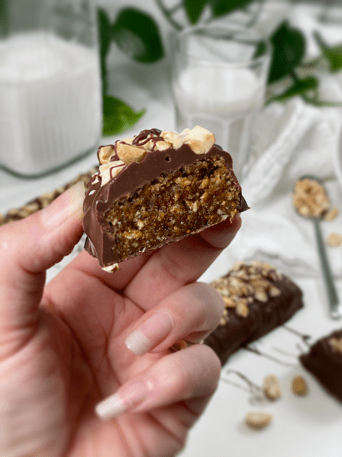
Ingredients:
Yields 8×8 pan
- 1 3/4 cups dried white mulberries, frozen
- 3/4 cup shelled peanuts
- 1 Tbsp maca powder
- 1 tsp Himalayan pink salt
- 10 Medjool dates, pitted or 1/2 cup date paste
- 3 Tbsp maple syrup
- 1 tsp vanilla extract
- Chocolate coating or melted vegan chocolate chips
Preparation:
Candy Bar Batter
- Place the frozen mulberries, peanuts, maca powder, and salt in the food processor, fitted with the “S” blade.
- Process until broken down into a small crumble.
- The mixture should go from sounding like pebbles in the processor, down to a steady hum.
- Add dates, maple syrup, and vanilla. Process until the batter sticks together when pressed between your fingers.
- Line an 8″x 8″ baking pan with plastic wrap before adding the batter, for easier removal.
- Place the batter in clumps around the pan, then smooth it out evenly. Lift the batter out of the pan with the edges of the plastic wrap, place it in front of you, and cut into desired shapes and sizes. Place each candy bar on the mesh screen that comes with the dehydrator.
- Dry at 145 degrees (F) for 1 hour, then reduce to 115 degrees and continue drying for 8-10 hours or until dry. The inside should be a little moist.
- Why do I start the dehydrator at 145 degrees (F)? Click (here) to learn the reason behind this.
Dipping in Chocolate
- Make the hardening chocolate, as described in the link above. You can also use melted vegan chocolate chips if you don’t have the ingredients on hand to make your own.
- Dip each bar into the chocolate, making sure to cover the bar completely.
- Lift the bar out of the chocolate with a fork, let the excess chocolate drip back into the bowl, then slide the bottom of the fork across the edge of the bowl.
- Place the bar on a wire baking rack or on a sheet of parchment paper, allowing the chocolate to set up and harden.
- Option: I ground up some extra chilled mulberries and dusted the top of the bars while the chocolate was still wet.
- Wrap each candy bar in plastic wrap, or you can place them in an airtight container in single layers.
- They should stay fresh for 5 days on the countertop, 2 weeks in the fridge, and longer in the freezer.
-
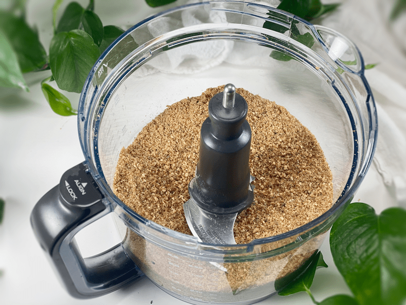
-
This is what the dry ingredients (including the frozen dried mulberries) look like.
-
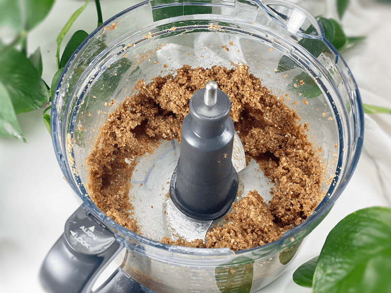
-
This is the batter once ALL the ingredients have been processed.
-
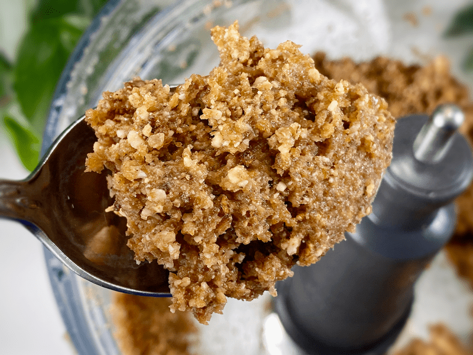
-
Texture shot. Don’t let the texture get too fine; you want crunchy nuggets in the candy bar.
-
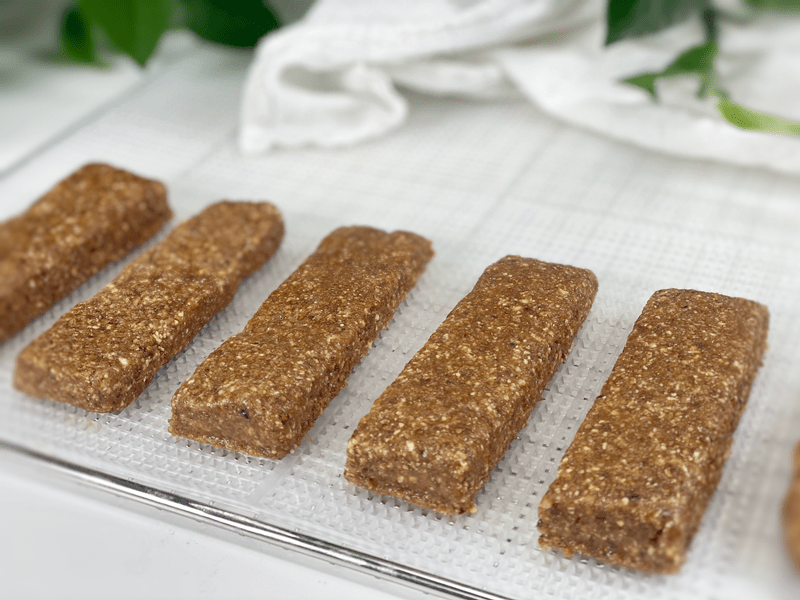
-
Shape and dehydrate. Once dehydrated, they will remain chewy.
-
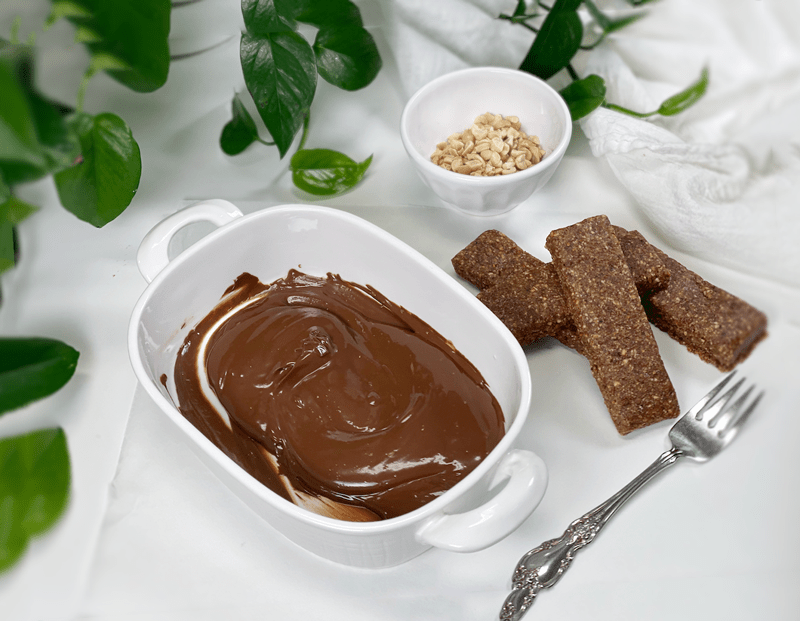
-
Get your work station ready for the chocolate party!
-
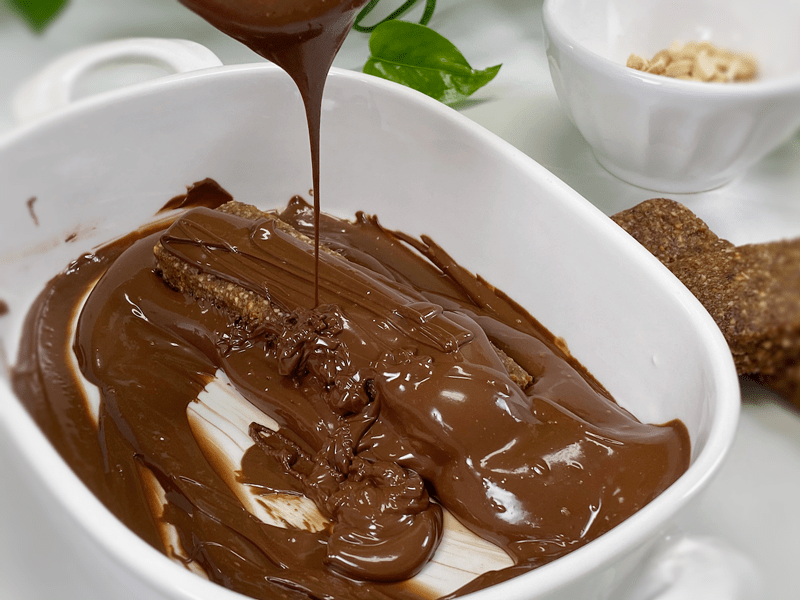
-
Give the candy bars a bath in chocolate.
-
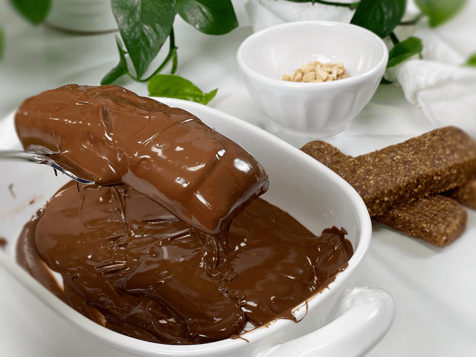
-
Carefully lift the bars out with a fork, tap off the excess chocolate, and place on a parchment sheet of paper.
-
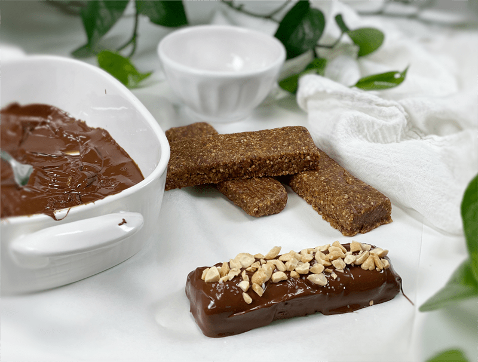
-
While the chocolate is still wet, sprinkle coarse salt and chopped peanuts on top.
-
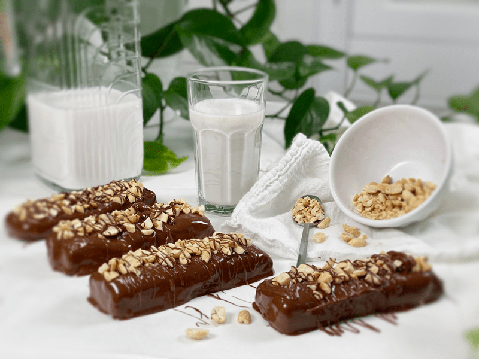
-
If so desired, drizzle a thin line of chocolate back and forth over the top.
-
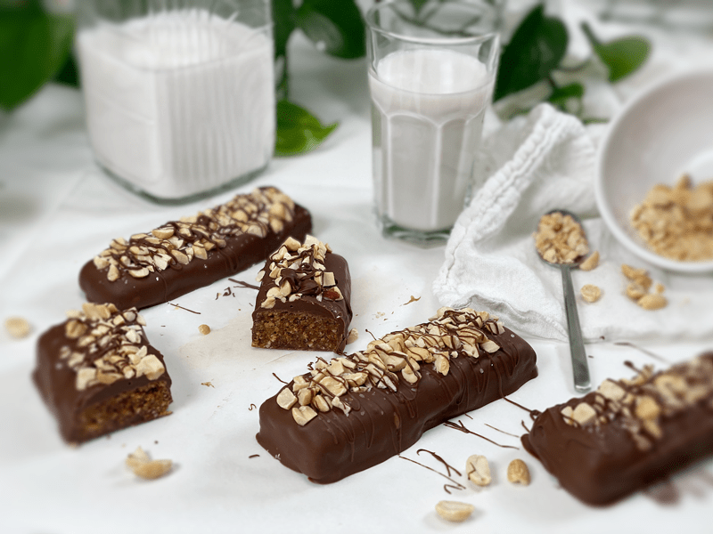
-
The chocolate will turn from glossy to a dull matte color… that’s when the chocolate has set.
© AmieSue.com